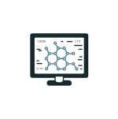

Tajuk: Sepak Raga Ratus

Standard Pembelajaran
- Melakukan kemahiran permainan tradisional sepak raga ratus.
- Mengenal pasti cara mengawal bola untuk mendapatkan bilangan terbanyak sepak raga ratus.
- Bekerjasama menyelesaikan masalah yang berlaku semasa melakukan aktiviti fizikal dan bersepakat dalam membuat penyelesaian.
Objektif Pembelajaran
Pada akhir pembelajaran murid dapat:
- Bermain sepak raga ratus. Menjelaskan dan menggunakan strategi mengawal bola.
- Bekerjasama menyelesaikan masalah.
Pentaksiran
- Lembaran kerja (jadual/latihan).
- Pentaksiran Rakan Sebaya (pembentangan dalam bilik darjah).
- Rekod Berterusan (Pentaksiran guru semasa murid membentangkan dan membincangkan soalan secara lisan).
Komputer dan Internet
Stesen 1
- Murid meneroka permainan sepak raga ratus dengan melayari internet dan menonton video sepak raga ratus.

Stesen 2
- Guru memberi penerangan dan murid berbincang dalam kumpulan kecil berdasarkan info yang didapati dari tontonan video dan carian di Internet.
Stesen 3
- Murid bermain permainan sepak raga ratus antara kumpulan.
- Murid menggunakan strategi yang telah dirancang semasa bermain antara kumpulan.
Petunjuk
Pentaksiran
Teknologi
Bersemuka
Kolaboratif